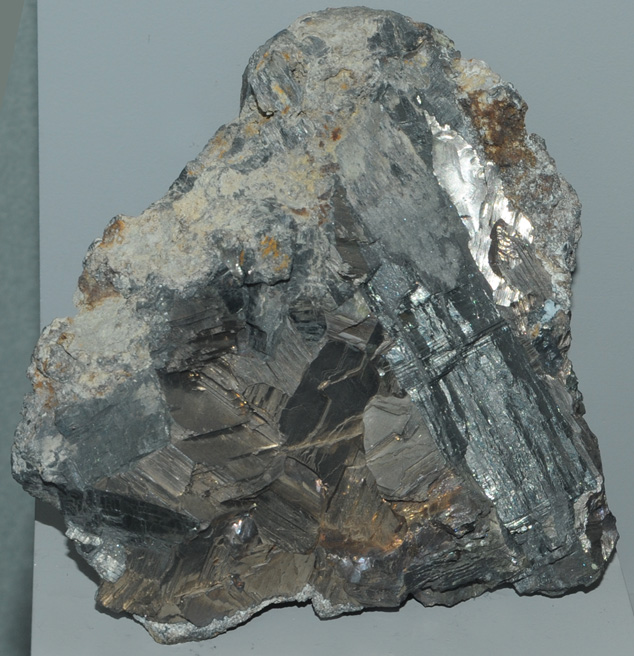

|

| Bi2S3
This sample of bismuth with bismuthinite is displayed in the Smithsonian Museum of Natural History. Bismuth is one of the few elements that can be found in pure form as natural minerals. The sample at left is about 18x18 cm and is from Carmen mine, Huayna, Potosi', Bolivia. Bismuthinite is a sulfide of bismuth with the composition Bi2S3. It usually appears as a lead gray to tin white deposit.
|